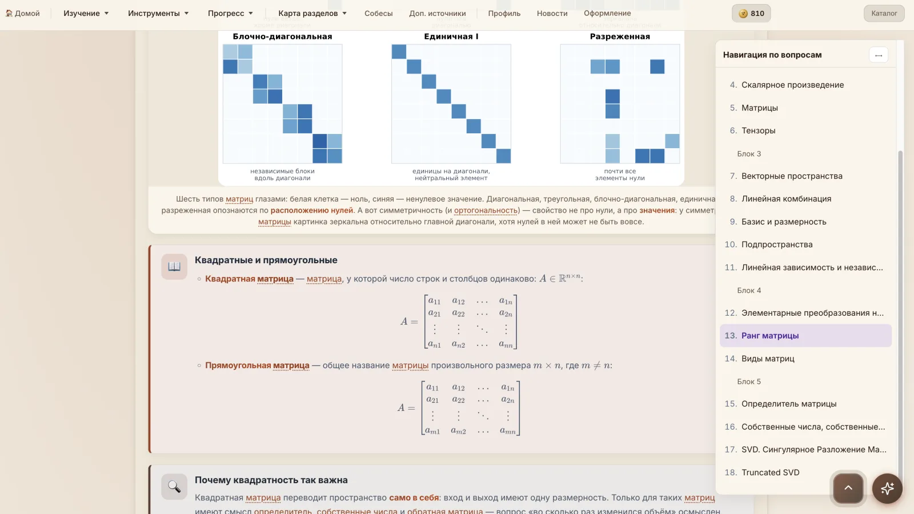

Подготовка к ML без хаоса
Системный маршрут от математики и Python до Deep Learning, NLP и MLOps. Изучайте темы в формате реальных вопросов, проверяйте себя тестами и наблюдайте прогресс в одном месте.
Материалы открываются локально. Прогресс сохраняется в этом браузере.

Не просто конспект
Каждый вопрос можно изучить, отметить пройденным и добавить в личный
прогресс.
Начать обучение
Всё необходимое для самостоятельной подготовки
Выберите тему, изучайте материалы и проверяйте себя. Для локальной работы не нужны аккаунт и оплата.
Открыть материалыВаше учебное пространство
Открывайте материалы, отмечайте прогресс и повторяйте изученное. Данные остаются в этом браузере.
Открыть DataLab